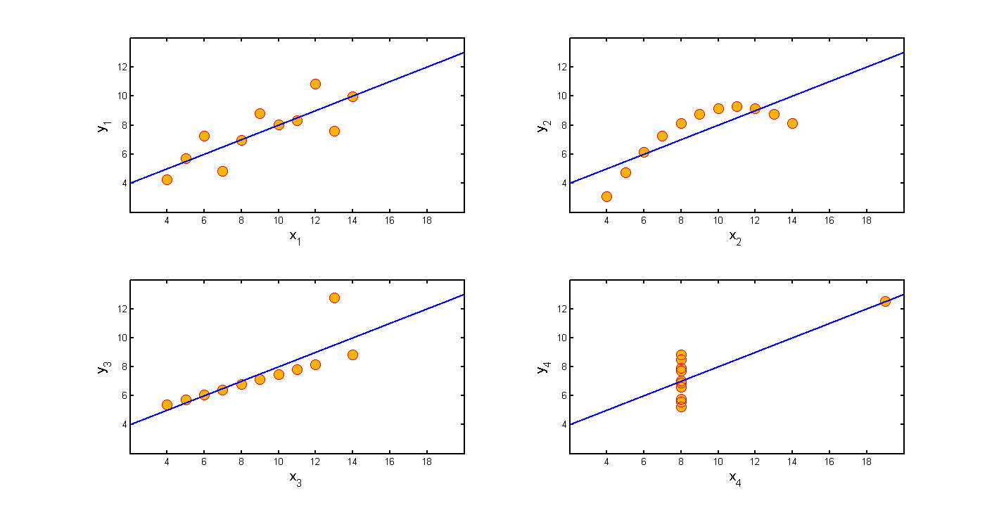

Display four data sets each with the same correlation of 0.81.
loadData('anscombe');
pointSpec = {'o','MarkerSize' , 11,...
'LineWidth' , 1.2,...
'MarkerEdgeColor', 'r',...
'MarkerFaceColor', [1,0.7,0]
};
axisSpec = {'XTick' , 4:2:18,...
'YTick' , 4:2:12,...
'XLim' , [2 20],...
'YLim' , [2,14],...
'box' , 'on' ,...
'LineWidth' , 2
};
lineSpec = {'-b','lineWidth',2};
labelSpec = {'FontSize',14};
domain = 0:0.01:20;
for i=1:4
subplot(2,2,i);
plot(x(:,i),y(:,i),pointSpec{:}); hold on;
w = [ones(size(x,1),1) x(:,i)]\y(:,i);
f = @(z) w(1) + w(2)*z;
plot(domain,f(domain),lineSpec{:});
xlabel(['x_',num2str(i)],labelSpec{:});
ylabel(['y_',num2str(i)],labelSpec{:});
set(gca, axisSpec{:});
end
printPmtkFigure anscombe;
